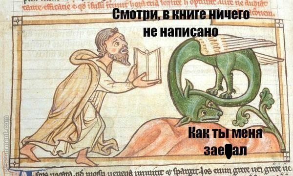

Классика - в нескольких словах, баяны, с которых не устаёшь проигрывать даже после многократного повторения. По сути, это - сливки в мемасном молоке,
поскольку далеко не каждый мем может похвастаться таким количеством пАзитиФФ4ика, чтобы стать классикой и вызывать приятные эмоции ещё долго.
Картинки, полностью отражающей суть феномена найдено не было, поэтому тут просто будет висеть классика.
Ещё немного классики ниже. На здоровье.

Дальше
Назад
Главная